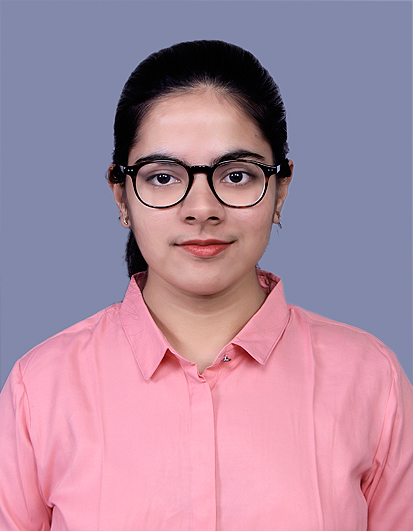

Ashavari Chaudhury

my email
linkedin profile
PROFESSIONAL SUMMARY
I am an MTech Graduate (Batch Topper) in Dept. of CSE from NIT Jamshedpur. I am a consultant at Deloitte where I am
working on projects in the FMCG sector as a senior data scientist. I was a Software Developer at Ericsson for 2 years where
I worked on Cloud Monitoring and Analytics and Devops. I have completed internships at Bosch in ADAS parking, at HP Inc
in regression testing and at Highradius Corporation in Machine Learning. I am looking for an opportunity to best apply my
skills and build my expertise to have a meaningful impact in the organization
TECHNICAL SKILLS AND CERTIFICATIONS
Programming Languages: Python (Proficient), C++ (Intermediate)
DevOps: Kubernetes (Proficient), Docker (Proficient)
Monitoring: Grafana (Proficient), monit (Proficient), Prometheus (Intermediate)
Machine Learning: Scikit-learn, OpenCV, Tensorflow, Fast API(REST API development), NumPy, Pandas
Other libraries & Tools: Matplotlib, Seaborn, Linux, Git, Jenkins, Confluence, PyCharm, VS Code, MS Office,MS Fabric, Scrum (Agile
Framework)
Certifications: Certified Kubernetes Administrator (CKA)
EDUCATION
- National Institute of Technology Jamshedpur, Jharkhand
MTech in CSE: 9.68 ( First in CSE Dept.) Aug 2022 – June 2024
- Kalinga Institute of Industrial Technology Bhubaneswar, Odisha
BTech in ECE: 8.72 Aug 2016 - June 2020
EXPERIENCE
Consultant - Deloitte Touche Tohmatsu Ltd. (Bengaluru, Karnataka) Aug 2024 – current
-
Part of the AI and Data team under the Technology and Transformation Team.
-
Working on FMCG client projects as a senior data scientist with focus on Market Mix Modeling, Trade Promotion Optimization and
Python development in MS Fabric.
Software Engineering Intern - Bosch Global Software Technologies (Bengaluru, Karnataka) Jan 2024 – June 2024
-
Part of the Trained Park Assist Team under ADAS Parking Solutions Team.
-
Created a miniature car to perform camera localization and visual odometry using Nvidia Jetson Nano board and CSI IMX219
camera.
Software Developer - Ericsson India Global Services (Kolkata, West Bengal) May 2022 – Aug 2022
-
Engineered and deployed Kubernetes (CCDaaS) cluster provisioning functionalities, enhancing testing and research capabilities
within the Flexilab project.
-
Utilized proprietary software for back-end services to services in Flexilab for cluster updating and scaling. Collaborated with 3
cross-functional teams to design, develop, and deploy new provisioning services within Flexilab.
Associate Engineer - Ericsson India Global Services (Kolkata, West Bengal) Feb 2021 – April 2022
-
Trained and deployed multiple Machine Learning models in Kubernetes clusters for predictive analytics on cloud infrastructure for
3 use-cases - Node Failure Classification, Resource Allocation Forecasting, Resource Availability Clustering.
-
Used Prometheus for data storage and querying (PromQL). Integrated results in Grafana dashboards via REST API using FastAPI
framework.
Intern - HP Inc R&D (Bengaluru, Karnataka) Jan 2020 – Jan 2021
-
Collaborated in a 4 member team to create an ML-based Test Case Prediction System (Change Based Testing)
-
Extracted data from test case logs and mapped test cases to code changes using Git repositories. Performed data validation and
analysis for machine learning model input.
-
Developed robust API services using Python FastAPI and engineered a command-line application (CLI), enhancing project
functionality.
Intern - Highradius Corporation (Bhubaneswar, Odisha) June 2019 – Jan 2020
-
Optimized Machine Learning (ML) models for collections and deductions use cases in the Rivana product for existing accounts.
-
Led a 4-person pod (team) as Point of Contact (POC) for remittance prediction in Cash App. Implemented ML models for new
account on-boarding.
PROJECTS
Prototype for Camera Localization and Visual Odometry Jan 2024 – June 2024
- Skills Learnt: Python, OpenCV, Linux, Jetson Nano Single Board Computer
- Created a miniature car to perform camera localization and visual odometry using Nvidia Jetson Nano board and CSI IMX219
camera.
- Utilized the Oriented FAST and Rotated Brief algorithm for keypoint detection and description along with the Brute-force matching
algorithm for feature matching.
Comparison study of Machine Learning models in IoMT Aug 2023 – June 2024
- Skills Learnt: Python, scikit-learn, metaheuristic algorithms, Tensorflow.
- Performed exploratory data analysis on two publicly available IoMT datasets.
- Trained 6 machine learning models using scikit-learn library and the extreme learning machine (ELM) model using Tensorflow.
- Used 7 of the latest bio-inspired swarm-based metaheuristic algorithms for feature selection with the ELM model.
ACHIEVEMENTS AND PUBLICATIONS
- Stood first in the CSE Department at NIT Jamshedpur with a cgpa of 9.68.
- Submitted (under peer-review) a research paper titled ’A scoping Review of Feature Selection Methods for Network Anomaly
Detection in Internet of Medical Things’ to the International Journal of Information Security.
- Received the ’ACE’ Corporate Award for my contributions to the Flexilab Project at Ericsson.
- Topped my school during Class 10th ICSE Board Exams with a score of 96.67%.